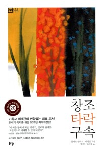

월터스의 『창조 타락 구속』을 읽고 모인 수요일 오전, 책을 다 읽지 못했다는 겸연쩍은 고백들 사이로도 나눔은 유난히 깊었다. 전쟁과 사건 사고를 '구조와 방향'으로 다시 보게 됐다는 소감으로 시작해, 한 참석자가 꺼낸 신앙 공동체 안의 아픈 갈등이 모임 전체를 관통하는 실제 사례가 되었다. 완벽주의의 낙심을 풀어 준 '보존'이라는 단어에 여러 사람이 각자의 자리에서 공명했고, 진행자는 무에서 유의 창조를 묻는 질문에 답한 뒤 세계관이란 무엇인가를 길게 강의했다. 처음의 그 갈등 질문으로 돌아와 '진리의 반석 위의 분별'로 매듭을 짓고, 세 사람의 기도 제목을 품는 중보기도로 마쳤다.
전쟁과 사건 사고를 '구조와 방향'으로 다시 보다
첫 나눔은 이 책이 교회의 말씀 흐름, 매일의 큐티와 신기하게 맞물린다는 즐거운 발견으로 시작됐다. 한 참석자는 '전쟁은 왜 끝나지 않느냐, 이 세상에 사건 사고는 왜 이렇게 많으냐'고 하나님께 따져 묻던 자신의 질문이 달라졌다고 했다.
선교 기도회에서 전쟁 중에도 믿음의 사람들을 통해 일하시는 하나님 이야기를 들으며 시각이 바뀌었고, 이제는 '왜 이러세요'라고 답을 조르는 대신 하나님이 지으신 구조가 무엇이고 그 안에서 방향이 어디로 가고 있는지를 묻게 되었다는 것이다. 눈으로 보기에 못마땅한 상황들 속에서도 선한 역사를 이루어 가시는 하나님을 찾아가는 인생이 되고 싶다는 다짐이 모임의 문을 열었다.
"복음 없는 모임은 소용없다" — 한 선포가 남긴 파문
이어 한 참석자가 무거운 고민을 내려놓았다. 오랜 세월 관계를 쌓아 온 모임에서 리더가 된 언니가 복음 중심의 결단을 폭탄처럼 선포하면서, 아직 교회에 발을 들이지 못한 친구까지 크게 놀라 관계 자체가 흔들리게 됐다는 것이다. 잘못을 자책하며 조급해진 언니에게는 어떤 권면도 들어가지 않는 상황이었다.
진행자의 답은 의외로 단순했다. 그런 시기가 있을 수 있으니 기다리라는 것, 말할 기회는 또 오고, 함께 성경을 읽다가 하나님이 마음을 주실 수도 있다는 것이었다. 다른 참석자도 전도 역시 결국 관계에서 시작된다는 경험을 보탰다. 이 사례는 그대로 이날의 숙제가 되어, 모임 끝 무렵 '양쪽 다 맞는 것 같아 헷갈린다'는 질문으로 다시 돌아온다.
완벽주의자의 낙심을 풀어 준 '보존'
구조와 방향이라는 틀은 여러 사람에게 각자 다른 위로가 되었다. 한 참석자는 하나님 음성이 들리지 않아 미지근해진 시간들, '나에게는 왜 폭발적인 경험을 안 주시나' 하던 의심까지 솔직히 꺼내 놓으며, 원상태로 돌아가는 것이 회복의 전부가 아니라는 이 책의 관점이 완벽주의로 낙심하던 자신을 일으켰다고 했다. 공격성마저 창조 구조에 속한 것이라는 대목에서는 자녀 양육이 달라졌다 — 미움에서 나오는 정죄가 아니라 사랑에서 나오는 징계를 하겠다는 결심이었다.
책이 어려워 끝까지 못 읽었다는 참석자도 '하나님은 창조 세계를 내버려 두지 않으신다'는 한 구절이 마음에 꽂혔다며, 자기 마음도 그렇게 보존하며 지지 않고 가져가겠다고 나눴다. 진행자는 십자가에서 성부와 성자가 끊어지던 그 순간에도 두 분을 잇고 있던 성령의 끈 이야기를 얹으며, 비참한 가운데서도 우리를 하나님과 연결하는 생명의 끈이 있다고 화답했고, 처음 온 이의 나눔에 모두가 박수를 보냈다.

무에서 유의 창조인가 — 엑스 니힐로 문답
한 참석자가 책을 읽기 전 어느 블로그에서 본 서평을 꺼냈다. 이 책이 혼돈 가운데서의 창조를 말하는 것이 무에서 유의 창조를 부정하는 것 아니냐는 의문이었다. 진행자는 이를 창조 교리를 정리할 기회로 삼았다. 성경은 악의 근원을 설명하지 않은 채 악을 전제해 놓고 하나님이 그것을 어떻게 다루어 가시는지 이야기하며, 홍해를 가르고 물에서 건져내는 성경 전체의 이미지가 혼돈에 질서를 부여하시는 하나님을 그려낸다는 것이다.
여기서 '타락'이라는 어휘 대신 창조-보존-회복으로 부르자는 한 국내 학자의 제안도 소개됐다. 창조에서 굴러떨어져 무로 돌아간 것이 아니라, 하나님이 지으신 것을 너무 사랑하셔서 붙들고 계시다는 뜻이다. 무에서 유를 창조하신 성령이 지금은 교회 공동체를 통해 새 창조를 일으키고 계신다는 신학자의 문장까지, 짧은 질문 하나가 밀도 있는 교리 문답으로 자랐다.
독고다이의 시대와 참된 권위 — 세계관 강의
진행자가 준비해 온 정리 자료를 나누며 모임은 강의로 넘어갔다. 출발점은 화제가 됐던 한 연예인의 대학 축사였다. '네 갈 길을 가라'는 그 말이 실은 시대정신의 요약이며, 정작 말하는 이도 자기가 어떤 세계관 위에 서 있는지 모른 채 시대가 정리해 준 이야기를 전한 것이라는 진단이었다. 탈권위의 시대에 '권위'의 어원이 '자라게 하다'임을 짚으며, 참된 권위 아래에서 훈련받은 사람이 누리는 자유를 이야기했고, 한 사람의 세계관이 다수가 되면 문화가 되고 인류 전체가 되면 시대정신이 된다는 구도를 그렸다.
강의는 경이(wonder)의 상실로 이어졌다. 별이 감탄의 대상에서 분석의 대상이 되어 버린 시대, 질서 있는 코스모스가 의미 없는 스페이스가 되어 버린 시대에 대한 이야기였고, 화성에 홀로 버려진 우주인이 '온 지구가 너를 구하러 가고 있다'는 메시지에 무너지는 영화 「마션」의 장면이 복음의 예화로 등장했다. 요한복음의 '말씀'을 초기 한국어 성경이 '도(道)'로 옮겼다는 대목에서는, 공자와 맹자가 찾아 헤매던 그 도가 인격으로 우리 가운데 오셨다는 데까지 나아갔다. 마지막은 경계였다 — 거룩의 영역 뒤에 숨는 이원론은 도피가 아니라 직무유기이며, 북클럽도 방향이 교만으로 틀어지면 비참해진다는 것.
다 맞는 것 같아 헷갈릴 때 — 반석 위의 분별
모임 끝에 처음의 그 고민이 되돌아왔다. 언니의 말도 근본적으로는 진리이고 놀란 친구의 입장도 맞는데, 양쪽 다 맞다고 여기는 것 자체가 이원론이냐는 질문이었다. 진행자는 아니라고 답했다. 반석 위에 서 있기에 다양한 사람이 공존할 수 있고, 지금 힘든 것은 오히려 공동체와 지체를 사랑하는 마음이 있다는 증거라는 것이다. 해결을 조급해하지 말고 하나님의 섭리와 일하심을 신뢰하며 기다리라는 권면에, 기도가 무엇인지에 대한 이야기가 자연스럽게 따라붙었다.
'우리 수준이 신학대학원급'이라는 농담과, 초신자가 '보존'이라는 단어에 주목한 것이 놀랍다는 격려가 오간 뒤, 이날 나온 세 사람의 기도 제목 — 공동체의 갈등, 고통받는 친구, 자녀와의 관계 — 을 하나하나 품는 중보기도로 모임이 닫혔다. 방학 동안 자녀들과 보낼 시간을 위한 축복까지, 기도는 그날 오간 모든 이야기를 다시 한 번 하나님 앞으로 올려놓았다.